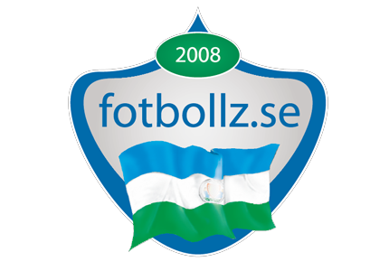
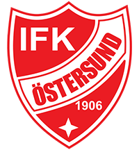
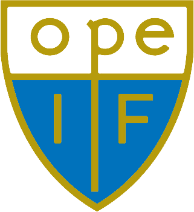
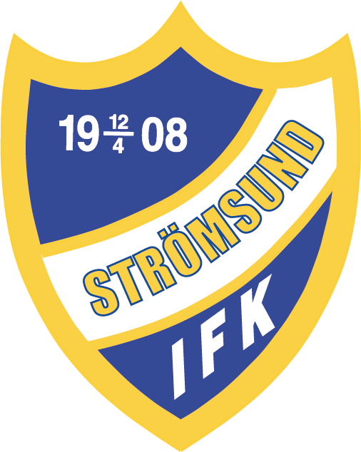

FotbollZ

HOME
ÖFK
Local News
Predictions
Latest News
TRÄNINGSMATCH HERR
Träningsmatcher Herr JHFF Frösö IF - IFK Östersund 18:15, 4 feb. 2024 ÖP-hallen
Klubbar
Division 2 - Herrar

IFK Östersund
Division 1 - Damer

Ope IF
Divison 4 - Herrar

IFK Strömsund